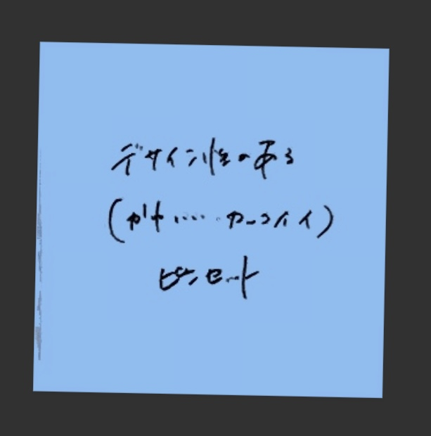
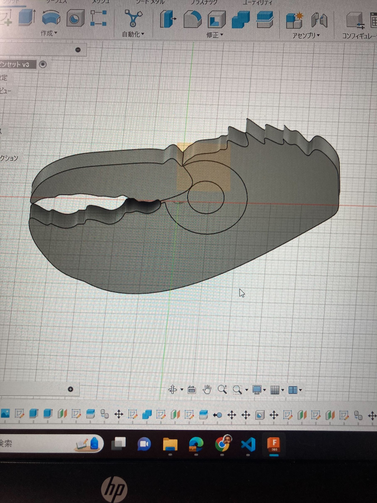
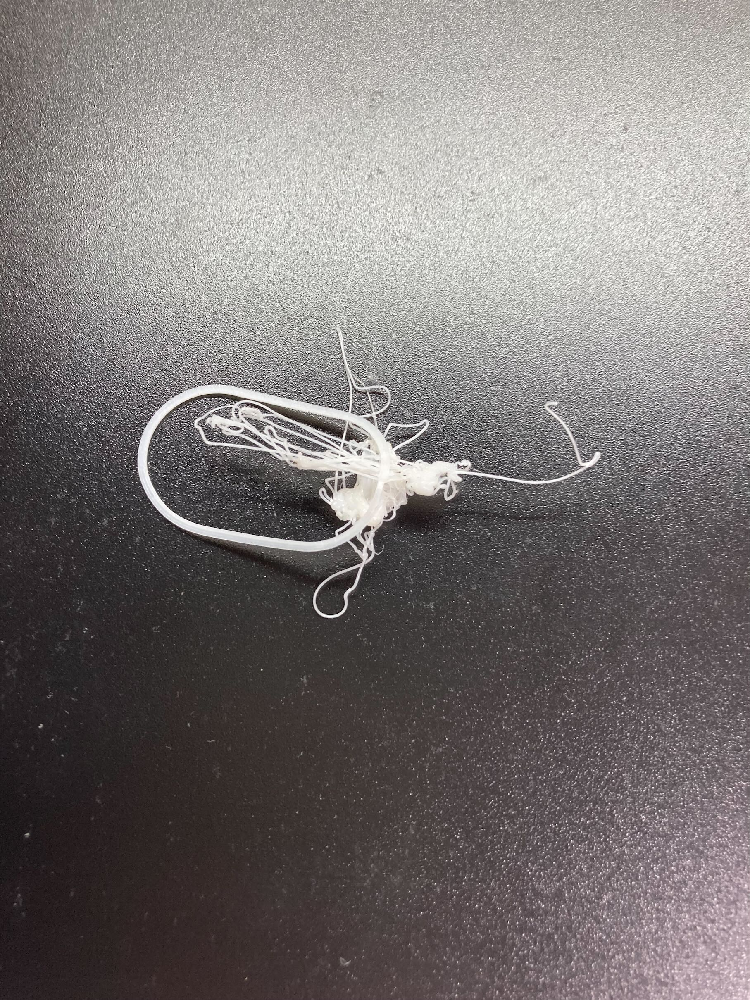

【ロブスターの爪型ピンセット】
今回の課題は、「ピンセットを進化させる」というものです。
まず、製作期間前にポストイットで出たアイディアを基に「デザイン性のあるピンセット、「角のないピンセット」を目指して自分なりに製作してみました！


この二つを踏まえて、ユニークであるか、角が無くても摘まめるかの二点に重点を絞りました。
そこで生まれたのが、ロブスターの爪型ピンセットです！
 こちらが完成品になります。
こちらが完成品になります。
従来のピンセットは先がとがっているものが多く、持ちながら転倒した場合にとても危険だと考えました。
ロブスターの爪の形は湾曲部分が多く、とがっている部分も少ないため危険性を最小限に抑えられると考えました。
 初期段階では左の画像のように可動部分を付けようとしていました。
この形では、可動域は広がるものの、広げた後に元の位置に戻りません。
素材も樹脂であるため、可動部分を付けずに樹脂の反発力を利用する方向にしました。
【実際に3Dプリンタで製作した時の様子】
 一回目にプリンタにかけてみたところ、カスができました。ＱＵＲＡに読み込む際に天板に対して斜めにプリントするように設計してしまったことが原因だと考えられます。
最終的に天板に対してまっすぐプリントするように設定し、最初の写真のように作ることができました。
【反省点】
・樹脂といってもやはり固いので、初期段階で考えたジョイントを付けて可動しやすくするべきであると考えました。
ただ、一度挟んでも元の位置に戻ってこないので、反発力を上手いこと生み出してからジョイントをつけるべきだと考えました。
・ロブスターの爪というデザイン自体はお気に入りなので、空いたスペースに穴を開けて、キーホルダーとしても利用できるようにしてもいいかもしれないと考えました。